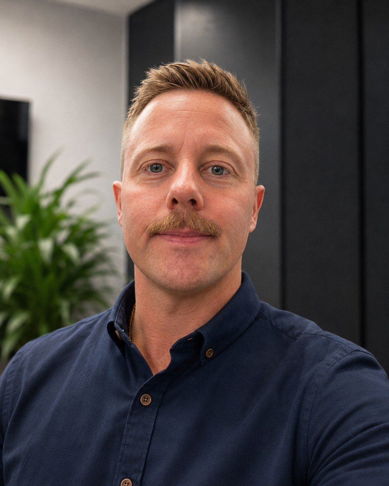

Car purchase support
Approx. $16,000 saved
Researching options, comparing vehicles and using skilled negotiation to help a client make a confident purchase.

NDIS, aged care & private support
A small, capable team helping you get out, get things done and live life your way — NDIS, aged care or private support.
Greater Sydney · Central Coast · Blue Mountains
From everyday support to new experiences
Tell us what matters to you. We can help with the everyday essentials — and the bigger things you want to do.
Also available: shopping and errands, technology help, paperwork and research, and more.
Real support, real life
Support can mean getting things done, trying something new or making a big decision easier. Here are examples of what we've helped people achieve.
Every person's goals and needs are different. These examples show possibilities, not a promise of particular savings or funding approval.
Shared with permission
Real feedback from people we've supported — no generic testimonials.
“Punctual, professional and friendly. I will be happy to request future assistance. Good bloke.”
What guides every interaction
The standards behind every interaction.
Reliable, honest support with clear communication and follow-through.
We listen first and treat every person with dignity and care.
Your choices, goals and independence guide the support.
We arrive prepared, do what we say and take responsibility.

The people behind Compass
Mark Walsh Managing Director
Founded and led by Mark Walsh, Compass combines leadership, coaching and practical support experience with a small, growing team. Our focus is on helping each person build confidence, get things done and enjoy more of life.
Our male and female team members bring different personalities and skills. We work to match support to each person's preferences, needs and activities.
Professional, safe and dependable
Appropriate cover for dependable, professional support.
NDIS, aged care or private
Not sure whether your funding may cover an activity or support? Reach out for a free, confidential chat. We'll help you explore your options and what needs to be checked before booking.
Funding is individual and must be confirmed with your plan manager, care partner or relevant funding provider.Yes. We offer private support as well as supports arranged through NDIS or aged care programs.
Yes. We can discuss a tailored plan including activities, transport, everyday organisation and capacity-building tasks where appropriate.
We can discuss suitable group transport and personal assistance. Availability, vehicle accessibility and safe transfer arrangements must be confirmed for each booking.
Let’s talk
Tell Compass what you'd like help with. Speak directly with Mark about the team, your goals and the best next step — no pressure.
Flexible arrangements can be discussed for longer shifts, multiple days per week or regular ongoing support.